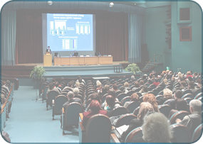

Добро пожаловать в онлайн школу
VeraVla edu!
Переквалифицируйся в разработчика искусственного интеллекта и получи высокооплачиваемую работу
Мы обучаем с гарантией!
Первый месяц действует гарантия 100% возврата денег, если тебя не устроят наши курсы
7 причин почему именно мы?
Ты станешь востребованным специалистом в области искусственного интеллекта
Будешь создавать свои модели искусственного интеллекта на языке программирования Python
Сумеешь создавать программы, связанные с компьютерным зрением и нейронными сетями.
Мы обучаем только тому, что тебе пригодится во время работы!
Ты найдешь единомышленников, с которыми сможешь создавать свои проекты
Мы создаём сообщество профессионалов, таких же как и мы, жаждущих развивать и изменять этот мир к лучшему с помощью IT технологий
После успешного завершения курса, мы поможем тебе трудоустроиться в Южнокорейские IT компании!
Искусственный интеллект - это круто?
-
На данный момент только в Южной Корее ищут 10,000 специалистов в области AI!
-
Младшие разработчики искусственного интеллекта без опыта работы могут получать в Южной Корее 60,000,000 вон (51,000$) в год. Специалист со средним стажем работы может получать уже около 100,000,000 вон (85,000$) в год.
-
В США уровень зарплат ещё выше! Младший специалист без опыта работы получает в среднем 93,000$ в год. А инженер со средним стажем работы получает уже больше 140,000$ в год!
-
А самое вкусное то, что твоя зарплата будет расти вместе с твоими навыками. Стаж не так важен.
Важно понимать что
Искусственный интеллект - это не одна дисциплина, как думают многие, а совокупность различных между собой направлений.
Подготовка реально хороших специалистов требует времени, краткосрочные курсы эффекта не дают.
Большинство менторов никогда не работали над реальными проектами. Они изучали все по видеоурокам и книжкам, и преподают без практики, что очень печально.

На многих курсах преподают готовые/идеальные кейсы без всяких сложностей, поэтому студенты после таких курсов не могут решать реальные задачи на работе.
Почему именно наш курс? Все просто!
-
Объясняем сложные вещи простым и доходчивым языком.
-
Обучаем не просто языку программирования, или одной какой-то дисциплине, мы обучаем полностью всей специальности.
-
Ознакомляем с содержанием урока только в режиме реального времени. Ты сможешь сразу задать вопрос и тут же получить ответы. Мы всегда будем рядом.
-
Обучение ведет ведущий и действующий специалист в области искусственного интеллекта в Южной Корее.
-
Обучение проходит в группе по 15 человек, которая внутри делится на 3 команды, и каждая команда выполняет собственный проект. Таким образом, студенты смогут прочувствовать тонкости командной разработки, и уже на этапе обучения окунуться в рабочую атмосферу AI специалиста.
.png)
Что я узнаю из этих курсов?
Полностью весь курс состоит из 3 частей
AI - Junior Level.
Продолжительность 1 год
-
1Введение.
В этой секции, мы познакомимся с историей человека, который переквалифицировался в специалиста по искусственному интеллекту и отвечаем на вопрос: "Стоит ли это того, чтобы потратить 2 года на изучение искусственного интеллекта?" Также, мы разберём уроки, усвоенные специалистами, прошедших путь от младших до главных специалистов.
-
2Введение в программирование.
Эта секция начинается с объяснения понятий проблемы, сути и целей искусственного интеллекта. Ты узнаешь в чем разница между данными и информацией. А также что такое качество информации. Мы разберём, что такое алгоритмы, компьютерные программы и язык программирования Python, и начнём работать в интегрированной среде разработки для языка Python. Далее мы поймем суть переменных их свойства и типы. Именно с этой секции ты начнёшь писать свои первые программные коды на языке программирования Python. Мы изучим все аспекты этого удивительного языка. Далее мы разберём такие библиотеки как Numpy, Pandas и Matplotlib. В этой секции ты познакомишься со средой разработки Jupyter Notebook.
-
3Введение в искусственный интеллект.
Эта секция показывает нам, разницу между линейным и нелинейным программированием. Описывает процесс получение знаний. Также, ты узнаешь, в чем разница между AI, machine learning и deep learning. Также обсудим виды искусственного интеллекта, его применения и примеры.
-
4Алгоритм machine learning.
В этих секциях, мы подробно разберём работу алгоритмов machine learning. И ты создашь очень простую, но уже свою модель искусственного интеллекта. Также ты научишься оценивать точность моделей. В этой секции мы подробно начнём разбирать одну из библиотек искусственного интеллекта scikit learn. Здесь же мы разберём другую среду разработки, которая называется spyder.
-
5Процесс разработки модели искусственного интеллекта и инженерия данных.
Здесь мы подробно обсудим весь процесс разработки модели искусственного интеллекта. Также мы начнём изучение анализа данных и их обработки для обучения искусственного интеллекта. В этой секции я научу тебя практическим примерам анализа и обработки данных от А до Я.
-
6Отбор фичей.
В этой секции из всех данных, что у нас есть, мы научимся отбирать только те, что нам нужны для обучения искусственного интеллекта.
-
7Чек лист почти для всех проектов искусственного интеллекта.
В этой секции я дам чек лист действий для построения end-to-end проектов искусственного интеллекта.
-
8Практические занятия.
На практических занятиях мы научим наши модели искусственного интеллекта следующим вещам: предсказывать нажатие на рекламу пользователем в фейсбуке; определять рак груди; предсказывать ухода в отставку клиентов банка; определять наличие кифоза у детей; определять положительные и отрицательные отзывы yelp; определять положительные и отрицательные отзывы на амазоне; определять спам письма; предсказывать наличие болезней сердца у пациентов; определять износ деталей на токарном станке.
-
9Deep learning: Искусственные нейронные сети.
В этой секции ты узнаешь, что такое deep learning и как это работает, также ты поймешь, что такое нейроны и как нейроные сети обучаются. Мы детально разберём все процессы, связанные с нейронными сетями. Ты также познакомишься с библиотекой keras, фреймворком tensorflow и средой разработки google colab.
-
10Deep learning: конволюционные нейронные сети.
Эта секция посвящена конволюционным нейронным сетям, которые применяются в компьютерном зрении. Мы детально разберём как искусственный интеллект распознает те или иные вещи, например, машины или яблоки.
-
11Практические занятия.
На этих занятиях ты разработаешь свои нейронные сети, которые смогут: предсказывать цены автомобилей; предсказывать выходную мощность электростанций (кейс виртуальных сенсоров); предсказывать поломки насоса на основе данных из сенсоров насоса; распознавать рукописные цифры, распознавать элементы одежды, распознавать различные объекты; распознавать повреждённые автомобили; распознавать уличные дорожные знаки для беспилотных автомобилей.